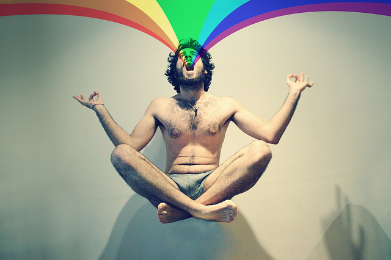

With the practice of meditation you enable yourself to enjoy an indestructible sense of consciousness and well being while engaging in any life activity. This discipline, that refers to a broad variety of practices, which the individual uses to train the mind or induce a mode of consciousness and mindfulness brings boundless benefits in all fields of your life.
